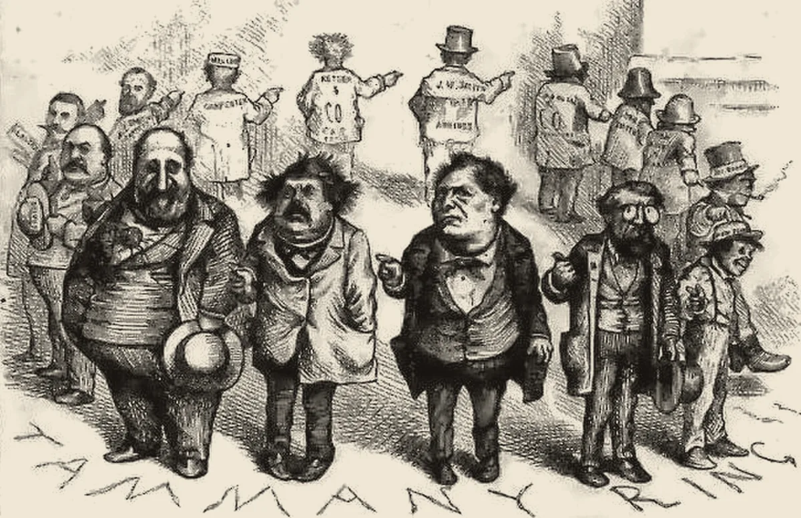

· Edición 38 · 5 min de lectura
Votos a cambio de obras: seis miembros de la comisión que revisa la deuda van a juicio, y lo que ha frenado ese trueque en otros países
Revisada el · 1 actualización posteriores a la publicación

Grabado de Thomas Nast, 1871 · Dominio público, vía Wikimedia Commons
Votos a cambio de obras: seis miembros de la comisión que revisa la deuda van a juicio, y lo que ha frenado ese trueque en otros países
Ver todo el tema, de principio a fin →
En pocas palabras. Para que el Gobierno pida prestado en el exterior, una comisión de congresistas tiene que dar su concepto. La Corte Suprema llevará a juicio a seis personas que la integraban en 2023, acusadas de aceptar obras de la UNGRD, la entidad de desastres, a cambio de su voto. En otros países ha servido algo sencillo: auditorías por sorteo y saber quién pidió cada obra.
El dato curioso. Antes de la nevera, la carne de cerdo se guardaba en barriles con sal. En 1863, el escritor Edward Everett Hale usó ese barril en un cuento como imagen del gasto público. Hacia 1870, en Estados Unidos, «pork barrel», barril de cerdo, ya era el gasto que un congresista conseguía para su región. En Colombia, la misma idea se unta: mermelada.
Qué pasó. Imagine un edificio donde cambiar el ascensor necesita el visto bueno del consejo. Si el administrador consigue los votos prometiendo arreglar primero la puerta de cada consejero, el ascensor se cambia, pero las puertas ya no se arreglan según cuál esté peor.
El 17 de octubre se conoció un auto de 667 páginas de la Corte Suprema. Los procesados son Wadith Manzur, Karen Manrique, Liliana Bitar, Julián Peinado, Juan Pablo Gallo y Juan Diego Muñoz. El delito es cohecho impropio: aceptar un beneficio por hacer lo que el cargo ya obliga. Según el auto, «probablemente aceptaron» promesas de funcionarios del Ministerio de Hacienda. Ellos lo niegan, y una acusación no es una condena.
Según la prensa que cita el expediente, se ofrecieron obras en Cotorra (Córdoba), por más de 46.000 millones de pesos; en Saravena (Arauca), por cerca de 35.000 millones, y en El Carmen de Bolívar, por más de 12.000 millones. Unos 93.000 millones escogidos, según la acusación, por un voto y no por una necesidad.
5 y 6 de diciembre de 2023
Reuniones en el Ministerio de Hacienda
Según la acusación, allí se habrían ofrecido obras de la UNGRD a cambio de votos favorables a los créditos.
Diciembre de 2024
Dos congresistas renuncian a la comisión
Manzur y Manrique dejan sus puestos mientras avanzan las investigaciones.
Marzo de 2026
La Corte los acusa
La Sala de Instrucción, empatada, decide con dos conjueces. Ordena detener a Manzur y Manrique, recién elegidos otra vez al Congreso.
Mayo de 2026
La acusación queda en firme
20 de octubre de 2026Pendiente
Audiencia preparatoria
Se fijan las pruebas del juicio.
Fuente: Infobae; Valora Analitik; El Heraldo; Cambio; Corte Suprema de Justicia
Cómo llegamos aquí.
- Un peaje con firma. Desde la Ley 18 de 1970, ningún préstamo externo del Gobierno es válido si antes no se convoca a la comisión. Su concepto no obliga, salvo si es desfavorable, según la Corte Constitucional citada por Hacienda. Un concepto en contra frena el préstamo: cada voto vale mucho.
- Una moneda a la mano. La UNGRD puede contratar rápido y sin licitación. Quien necesita votos con urgencia encuentra ahí con qué pagarlos.
- Nadie firma la petición. La obra no dice quién la pidió. El congresista la presenta como logro; la pagan las regiones sin un voto que ofrecer.
Ya pasó antes. En 2004, el voto de la representante Yidis Medina fue decisivo para la reforma que permitió la reelección presidencial. En 2008, la Corte Suprema la condenó por cohecho: confesó que le ofrecieron beneficios por ese voto. En 2024, la Corte ratificó la condena de tres exfuncionarios por esas ofertas. Por la UNGRD, su exsubdirector Sneyder Pinilla ya fue condenado tras un preacuerdo con la Fiscalía.
El patrón. Cuando un voto puede frenar algo urgente, el voto se vuelve mercancía. Las condenas llegan años después; el mercado sigue abierto si nadie ve el precio.
¿Hay salida? Varias, y con evidencia.
- Auditorías por sorteo (Brasil). Desde 2003, la Contraloría General de la Unión sortea los municipios que auditará. Como el sorteo hace que auditados y no auditados se parezcan, funciona como un experimento. Un estudio de Eric Avis, Claudio Ferraz y Frederico Finan, de 2018, revisó 2.241 auditorías: donde ya hubo una, la corrupción siguiente fue cerca de 8% menor.
- Revisar todas las obras (Indonesia). En un ensayo con más de 600 vías rurales, Benjamin Olken subió la probabilidad de auditoría de 4 de cada 100 a todas. El gasto que no aparecía en la obra bajó de 27,7% a 19,2%.
- Saber quién pidió cada peso (Brasil). En 2022, el Supremo Tribunal Federal declaró inconstitucional el «presupuesto secreto»: partidas que los congresistas asignaban sin que se supiera quién las pedía. En 2024, uno de sus jueces suspendió esos pagos hasta poder rastrear autor y destino.
- En Colombia, publicar. En 2024, un tribunal ordenó a la UNGRD y a su fiduciaria publicar sus contratos en el Secop II, el portal público de compras del Estado. Incumplían desde 2022.
Pero ojo.
- La trampa se muda. En Indonesia, mientras bajaba el robo de materiales, subió la contratación de familiares.
- El control puede empeorar las compras. En Chile, Gerardino, Litschig y Pomeranz hallaron que las auditorías revisaban más las licitaciones; las entidades auditadas licitaron menos y contrataron más de forma directa.
- Otro nombre, la misma partida. En Brasil, organizaciones de transparencia denunciaron que el presupuesto secreto siguió con otro nombre.
Lo que ya habíamos contado. El 29 de septiembre escribimos por qué el Estado vive de préstamos (ver esa edición), y el 2 de octubre, que la UNGRD contrata con reglas de empresa privada, más rápidas y con menos controles (ver esa edición).
Qué hacer con esto
Para ir pensando. Hoy y mañana se vota el presupuesto de 2027, que depende de préstamos. (Conocimiento general: los externos pasarán por esta misma comisión.)
Cómo prepararse. Ante una obra anunciada en su municipio, vale la pena buscarla en el Secop II: quién la contrató, por cuánto y si hubo licitación.
Ojo con el cuento. «Le traje esta obra a la región» suena a logro. Pero la obra la contrata una entidad con dinero de todos. Si la anuncia un congresista, conviene preguntar qué dio a cambio.
Qué podríamos exigir. Auditorías por sorteo a las obras de emergencia, como en Brasil, y que cada obra pedida por un congresista lleve su nombre en el Secop II.
Para quien quiera másDos lecturas
Eliminar la comisión. El exministro de Hacienda Juan Camilo Restrepo la llamó un anacronismo. Si un concepto en contra puede frenar un préstamo, la comisión funciona como un peaje. Quitar el peaje quita el incentivo.
Mantenerla y ponerle luz. La deuda la pagan todos, y el Congreso debe vigilarla. Sin la comisión, el Gobierno se endeuda sin que nadie elegido mire. Mejor votos públicos, actas abiertas y obras con autor conocido.
Quién decide y cuándo
Quién decide. La Corte Suprema, sobre la culpa de los seis procesados. El Congreso, sobre si la comisión sigue y con qué reglas. Hacienda ya cambió en 2024, por decreto, la forma de convocarla.
Cuándo. La audiencia preparatoria es el martes 20 de octubre. No hay fecha para la sentencia ni, que sepamos, un proyecto de ley para reformar la comisión.
Cómo participar. Cualquiera puede consultar en el Secop II los contratos de la UNGRD. (Conocimiento general: las actas de la comisión se pueden pedir por derecho de petición.)
Seguimiento de la decisión
Aplazada · plazo:
Corte Suprema de Justicia: Fijar en la audiencia preparatoria las pruebas del juicio por cohecho impropio contra seis personas que en 2023 integraban la Comisión Interparlamentaria de Crédito Público, y después decidir si son culpables.
La audiencia preparatoria se instaló el 20 de octubre: la Corte negó las nulidades, decretó testimonios y un peritaje sobre los perjuicios, y suspendió la diligencia hasta el 21 de octubre. No hay fecha para la sentencia.
Para quien quiera másLa paradoja del día
Manzur y Manrique renunciaron a la comisión en 2024 por la investigación. En marzo de 2026 fueron elegidos otra vez al Congreso, y ese mismo mes la Corte ordenó detenerlos. El voto que, según la acusación, se cambió por obras se volvió a ganar en las urnas.
Para conversar
La pregunta. Si un congresista consigue una obra que su pueblo sí necesitaba, pero a cambio de un voto, ¿la obra quedó bien hecha? ¿Y qué podríamos hacer para que las obras se repartan por necesidad y no por votos?
Para leer más
La corrupción y los gobiernos: causas, consecuencias y reforma, de Susan Rose-Ackerman (Siglo Veintiuno, 2001; el original, en inglés, es de 1999). Explica, desde la economía, por qué aparecen los sobornos, qué daño hacen y cómo reducir lo que se gana con ellos.
¿Le interesa ver las fuentes?
26 fuentes: 4 académicas, 6 oficiales, 14 de prensa, 2 de referencia.
- Prensa Infobae. Caso Ungrd: Corte Suprema de Justicia llamará a juicio a los congresistas de la Comisión de Crédito Público que vendieron su voto por jugosos contratos
- Prensa Valora Analitik. Caso UNGRD: Corte Suprema llevará a juicio a seis congresistas por presunta negociación de contratos públicos
- Prensa El Heraldo. A juicio congresistas de la Comisión de Crédito Público por caso de la Ungrd
- Oficial Corte Suprema de Justicia. Cinco congresistas y un excongresista, a indagatoria por presuntos acuerdos ilegales y presuntas irregularidades en contratación de la UNGRD
- Prensa Cambio. Corte Suprema ordena captura de los congresistas electos Wadith Manzur y Karen Manrique por el escándalo de la UNGRD
- Prensa Cambio. Caso UNGRD: Corte deja en firme llamado a juicio a seis congresistas y Karen Manrique seguirá presa
- Prensa El Heraldo. Karen Manrique y Wadith Manzur renunciaron a la Comisión de Crédito Público por caso Ungrd
- Oficial Congreso de la República (Ley 18 de 1970, normograma de la Cancillería). Ley 18 de 1970
- Oficial Ministerio de Hacienda (copia publicada por Ámbito Jurídico). Proyecto de decreto sobre la convocatoria de la Comisión Interparlamentaria de Crédito Público, noviembre de 2024
- Oficial Ministerio de Hacienda (normograma de la DIAN). Decreto 1552 de 2024
- Prensa El Espectador. Tras firma de preacuerdo, Sneyder Pinilla fue condenado a 5 años y 8 meses de cárcel
- Prensa El Mostrador. Corte Suprema pide revisar reforma que permitió reelección de Uribe
- Oficial Corte Suprema de Justicia. Sala Penal ratificó condena a tres exfuncionarios por irregularidades en proceso de aprobación de la reelección presidencial
- Académica NBER (Avis, Ferraz y Finan; Journal of Political Economy, 2018). Do Government Audits Reduce Corruption? Estimating the Impacts of Exposing Corrupt Politicians
- Académica Instituto Brasileiro de Ensino, Desenvolvimento e Pesquisa (IDP). Do audits help fight corruption in Brazil?
- Académica NBER (Olken; Journal of Political Economy, 2007). Monitoring Corruption: Evidence from a Field Experiment in Indonesia
- Académica NBER (Gerardino, Litschig y Pomeranz, 2017). Can Audits Backfire? Evidence from Public Procurement in Chile
- Prensa Poder360. Audiência do STF com governo e PGR discute orçamento secreto
- Prensa Migalhas. Flávio Dino mantém suspensão de emendas do orçamento secreto
- Prensa Infobae. Tribunal ordenó a la Ungrd y la Fiduprevisora divulgar contratos en SECOP II: estaban incumpliendo desde 2022
- Prensa Cambio. Juan Camilo Restrepo: «La Comisión Interparlamentaria de Crédito es un anacronismo»
- Referencia Word Origins (Dave Wilton). pork / pork barrel
- Prensa El Espectador (columna de opinión). Melaza
- Oficial Senado de la República. Presupuesto de 2027 será debatido el próximo lunes en el Senado, anuncia Honorio Henriquez
- Prensa Infobae. Semana clave para el Presupuesto de 2027 en el Congreso: debe aprobarse antes del 20 de octubre
- Referencia Universidad Nacional de San Martín (catálogo de la biblioteca). La corrupción y los gobiernos: causas, consecuencias y reforma
Glosario
- Comisión Interparlamentaria de Crédito Público: grupo de congresistas que debe ser convocado y dar su concepto antes de que el Gobierno firme un préstamo externo.
- Cohecho impropio: recibir o aceptar un beneficio por hacer algo que el cargo ya obliga a hacer.
- Auto: decisión de un juez durante el proceso, que no es la sentencia.
- Audiencia preparatoria: audiencia en la que se fijan las pruebas que se verán en el juicio.
- Conjuez: abogado que se suma a una sala para desempatar.
- Preacuerdo: acuerdo con la Fiscalía para aceptar cargos a cambio de una pena menor.
- Secop II: portal público donde las entidades deben publicar sus contratos.
- UNGRD: Unidad Nacional para la Gestión del Riesgo de Desastres.
Nota metodológica
Escogimos un nudo que se repite (la Yidispolítica en 2004, la Comisión de Crédito Público en 2023), con un hecho reciente: el auto de la Corte del 17 de octubre y la audiencia del 20. El presupuesto de 2027, que se vota hoy, ya lo tratamos y aún no tiene resultado. El tema no duele de la misma forma que una tragedia, así que lleva un poco de ironía, nunca sobre víctimas.
Hicimos unas 40 búsquedas en español, inglés y portugués: barrido de Colombia y del mundo del 16 al 19 de octubre y búsquedas dirigidas sobre el caso, la comisión y la evidencia sobre auditorías. No pudimos abrir los documentos completos; trabajamos con resúmenes y resultados de búsqueda, y no les atribuimos más de lo que dicen. De 26 fuentes, 12 no son de prensa: un poco menos de la mitad, porque los detalles del caso judicial solo los encontramos en la prensa.
Quedó sin verificar o con límites:
- Los valores de las tres obras vienen de la prensa que cita el auto (Infobae y Valora Analitik); no leímos el auto.
- Los medios no coinciden en si algunos procesados son hoy congresistas o excongresistas; por eso decimos que integraban la comisión en 2023. Tampoco coinciden en el monto y la fecha exacta de los créditos aprobados en diciembre de 2023; no los usamos.
- El alcance del concepto de la comisión (obligatorio de pedir, no obligatorio de seguir, salvo si es desfavorable) lo tomamos del proyecto de decreto del Ministerio de Hacienda, que cita la sentencia C-246 de 2004. No leímos la sentencia ni el texto final del Decreto 1552.
- Los datos de Brasil e Indonesia vienen de los resúmenes de los estudios. El de Avis, Ferraz y Finan aprovecha el sorteo de las auditorías, que funciona como un experimento natural; el de Olken es un ensayo aleatorizado; el de Chile compara entidades justo por encima y justo por debajo del umbral que decide quién se audita.
- Lo del presupuesto secreto de Brasil viene de dos medios brasileños.
- El dato curioso viene de Word Origins, el sitio de Dave Wilton sobre el origen de las palabras. Lo de la mermelada como nombre colombiano lo tomamos de una columna de El Espectador.
- Que los préstamos externos del presupuesto de 2027 pasarán por la comisión, y el derecho de petición para pedir las actas, los marcamos como conocimiento general.
Puntaje de impacto. Filtro primero (las cuatro condiciones de nudo) y luego puntaje de 1 a 3 en alcance, gravedad, duración, cercanía y decisión en curso; gravedad y cercanía valen doble (máximo 21).
| Tema | Alcance | Gravedad | Duración | Cercanía | Decisión | Total | Resultado |
|---|---|---|---|---|---|---|---|
| Votos a cambio de obras en la Comisión de Crédito Público | 3 | 2 | 2 | 3 | 2 | 17 | Elegido (edición 38) |
| Presupuesto de 2027 | 3 | 2 | 2 | 3 | 3 | 18 | Ya tratado; sin resultado al cierre |
| EPS intervenidas | 3 | 3 | 2 | 3 | 1 | 18 | Tratado el 6 de octubre, sin novedad de fondo |
| Decreto de tercerización laboral | 2 | 2 | 2 | 3 | 2 | 15 | Suspensión provisional |
| Hospital de Puerto Berrío | 1 | 3 | 1 | 3 | 2 | 16 | Regional, sin fecha |
| Petróleo y estrecho de Ormuz | 3 | 2 | 1 | 2 | 1 | 14 | No llega a 17 |
El trueque de votos por obras pasa las cuatro condiciones de nudo: se repite (2004 y 2023), tiene un mecanismo (un voto que puede frenar un préstamo urgente y una entidad que contrata rápido y sin licitación), alguien lo puede cambiar (el Congreso, el Ministerio de Hacienda, la UNGRD y los organismos de control) y el daño se mide (unos 93.000 millones de pesos en obras asignadas por voto, según la acusación). Hoy hay una sola edición.
El grabado es una caricatura de Thomas Nast, de 1871, en dominio público, vía Wikimedia Commons: el círculo de Tammany Hall, que manejaba la ciudad de Nueva York, donde cada uno señala al de al lado.
El libro: no pudimos consultar el catálogo de Santo & Seña, así que va sin enlace. Autor, año y editorial los confirmamos en el catálogo de la biblioteca de la Universidad Nacional de San Martín.